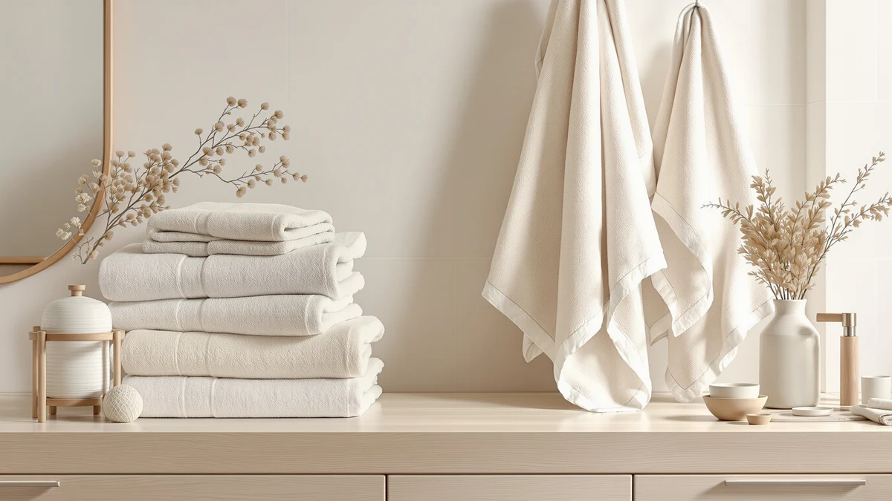

Jacquotha 2 Pieces Luxury Review (2026): Worth It?
Prices and picks verified as of October 2026. Independent, reader-supported reviews.


Quick Answer
This Jacquotha 2 Pieces Luxury review finds the $32.29 set worth it if you want two matching, 480 GSM cotton towels with a decorative checkered floral pattern rather than a plain household set. If you need to stock a full bathroom, one of the four-towel Utopia Towels alternatives below gets you more pieces for close to the same money.
Our pick: Jacquotha 2-Pieces Luxury Bath Towels at $32.29 Check Price on Amazon
Bottom line: our top pick is the Jacquotha 2-Pieces Luxury Bath Towels Checkered Floral at $32.29.
Things to Know Before You Buy
- GSM (grams per square meter) tells you how dense a towel is before you buy it. The Jacquotha set publishes 480 GSM, a mid-weight figure that dries faster than heavier hotel-style towels while still absorbing well. Our towel GSM guide breaks down what counts as light, mid and heavyweight.
- Price per towel matters more than the sticker price. At $32.29 for two towels, the Jacquotha set works out to $16.15 per towel, while the Utopia Towels four-packs covered later in this review cost about $8 per towel at $31.99 for four.
- The Jacquotha listing describes a cotton terry weave, while each Utopia Towels set specifies 100% ring-spun cotton. Ring-spun fibers are combed before spinning, which tends to reduce lint and shedding compared with standard cotton.
- None of the four towel sets in this review has a published rating or review count yet, so you're comparing spec sheets rather than a large pool of verified owner feedback.
- Pattern and color are a real factor here. The Jacquotha set's pink checkered floral design reads as decorative, while the Utopia Towels sets ship in plain white or grey that blends into more bathroom styles.
This Jacquotha 2 Pieces Luxury review looks at whether a $32.29, two-towel set with a checkered floral pattern earns its price next to the plainer, higher-count Utopia Towels sets that sit in the same price bracket. Bath towels rarely get the scrutiny bigger purchases do, but you touch this fabric every day, so the gap between a documented spec and a marketing adjective is worth a closer look.
Our take, after comparing GSM, size, material and price per towel against three Utopia Towels sets: the Jacquotha 2-Pieces Luxury Bath Towels earn their spot if you want a matched, decorative pair for a guest bathroom or a small household. If you're restocking a full bathroom or a busier household, the Utopia Towels alternatives further down this review put more towels in your cart for close to the same money.
Why You Should Trust Us
Best Bath Towels is written and maintained by Ilane Tall, who researches bath textiles rather than reviewing them from a brand's marketing brief. Every product in this review comes from the same product database we use across the site: current Amazon listings with verified pricing and published material specifications. We do not run a fake testing lab, and we don't claim to have washed, dried or used any of these towels ourselves. Instead, we compare what each brand documents, check it against competing listings, and say so plainly when a spec sheet is missing a figure a shopper would want. That distinction matters in a category where "luxury" gets printed on packaging regardless of whether the fiber or weight backs it up.
Our Research Experience
For this Jacquotha 2 Pieces Luxury review, our process is comparative and research-based. We pulled the current listing data for the Jacquotha 2-Pieces Luxury Bath Towels, including price, size, GSM and stated material, and set it alongside three Utopia Towels sets priced within thirty cents of each other. We researched the verified review counts attached to each listing and found none published yet for any of the four, which we treat as a gap rather than fill in with a guess.
Where a listing's language outruns its published specs, such as a "luxury" claim without a GSM figure to support it, we flag that instead of repeating the brand's copy as fact. This approach won't catch how a towel feels after fifty washes, but it does let you compare the Jacquotha set against the Utopia Towels alternatives on the same criteria rather than trusting four different brands' adjectives.
Overview & Specs

Jacquotha 2-Pieces Luxury Bath Towels
What we like
- 480 GSM is documented on the listing, giving you an actual thickness figure to weigh against competitors that skip the number entirely
- Pink checkered floral pattern gives the set a decorative look the plain Utopia Towels sets in this review don't offer
- Reinforced hems and stitching, which the listing credits for lower lint and better color retention over repeated washes
- Standard 55 x 27.5 inch size that fits most towel bars and hooks without folding
Flaws but not dealbreakers
- At $32.29 for two towels, it costs about twice as much per towel as any of the four-packs covered later in this review
- No verified rating or review count is published yet, so you're weighing the spec sheet rather than a pool of owner feedback
- The pattern-first design stands out in a bathroom where the rest of your towels are solid-colored
| Material | 100% cotton |
| Size | 55" x 27.5" |
Jacquotha positions this towel pair as a Luxury pick, and the listing backs that up with specifics most "luxury" towel listings skip: a 480 GSM weight, dense terry loops, and a 55 x 27.5 inch size that matches the standard full bath towel most US households already use. The pink checkered floral pattern sets it apart from the plain white and grey sets in the rest of this review, which makes it a better fit if you want your towels to double as bathroom decor rather than disappear on the rack.
What the set doesn't offer is towel count. Two towels at $32.29 works out to $16.15 each, roughly double the per-towel cost of the Utopia Towels four-packs further down this review. That math makes sense if you're buying for a guest bathroom, a small household, or want a matched decorative pair rather than a houseful of plain towels, but it's a real tradeoff if quantity is what you actually need.
What We Liked
The strongest point in this Jacquotha 2 Pieces Luxury review is how specific the listing gets: 480 GSM, dense terry loops, 55 x 27.5 inches, two towels, $32.29. A lot of towel listings lean on words like "luxury" or "premium" without a single number to back them up, and this one gives you the figure that actually predicts how a towel feels and dries.
The pink checkered floral pattern also does real work here. If you're decorating a themed bathroom or want towels that look intentional hanging on display, a plain white or grey set won't do that for you the way this pattern can. Reinforced hems and stitching round out the pitch, and the listing credits that construction for lower lint shedding, which matters if you've dealt with towels that leave fuzz on dark clothing or bathroom tile.
What Could Be Better
The math is the main sticking point in this Jacquotha 2 Pieces Luxury review. At $16.15 per towel, you pay roughly double what you'd pay per towel with any of the Utopia Towels four-packs covered below, which charge about $8 per towel at $31.99 for the set. Unless you specifically want two towels rather than four, that gap is hard to ignore.
There's also no published rating or review count on this listing yet, so there isn't a pool of verified buyer feedback to check against the brand's own numbers. And because the pattern is decorative rather than neutral, it won't blend into every bathroom the way a plain white or grey towel does. Neither issue is a dealbreaker, but they're both worth weighing before you buy two towels at this price instead of four.
Who Is It For?
This Jacquotha 2 Pieces Luxury review points toward a specific buyer: someone who wants two matching, decorative, 480 GSM cotton towels for a guest bathroom, a small household, or a gift, and is comfortable paying a per-towel premium for the pattern and the pair. If you want your towels to read as decor rather than fade into the rack, this set does that job.
If you're stocking a shared bathroom, a rental, or a household that goes through towels quickly, the towel sets in the next section give you more value. Each Utopia Towels option bundles four towels at roughly the same total price, which changes the per-towel math considerably if quantity matters more to you than a matched decorative pair.
Alternatives to Consider
If the Jacquotha set's per-towel price doesn't work for your household, these three Utopia Towels sets sit within thirty cents of its total price and each solve a different problem: more towels per dollar, a larger "extra large" size, or the same count in a different neutral color.

Editor’s Pick
Utopia Towels Luxurious Bath Towels
Utopia Towels' Luxurious Bath Towels Set matches the Jacquotha set's total price almost exactly at $31.99 but spreads it across four 27 x 54 inch towels instead of two, so a household that goes through towels quickly gets double the coverage per dollar. The tradeoff is a plain white finish instead of the Jacquotha set's checkered floral pattern, and the listing specifies ring-spun cotton without a published GSM figure to compare directly.
$31.99
Check Price on Amazon
Best Value
Utopia Towels 4 Pack Premium
Utopia Towels' 4 Pack Premium Extra Large set costs the same $31.99 but steps up to 30 x 60 inch towels, noticeably bigger than the Jacquotha set's 55 x 27.5 inch towels or the other Utopia Towels options here. If wrap-around coverage matters more to you than a decorative pattern or a documented GSM figure, this is the set that gives you the most towel for the money.
$31.99
Check Price on Amazon
Premium Choice
Utopia Towels 4 Pack Bath
Utopia Towels' 4 Pack Bath Towels Set shares the same 27 x 54 inch size and $31.99 price as the Editor's Pick above, but ships in grey rather than white. If grey fits your bathroom better than white or the Jacquotha set's pink pattern, this is the closest match on everything except color.
$31.99
Check Price on AmazonIs the Jacquotha 2 Pieces Luxury Bath Towels set worth $32.29 for two towels?
It depends on what you need.
How does the Jacquotha 2 Pieces Luxury Bath Towels set compare to Utopia Towels' 4-pack options?
The Jacquotha set ships two 480 GSM cotton towels with a checkered floral pattern for $32.29, while the Utopia Towels sets ship four plain, ring-spun cotton towels for $31.99.
Frequently Asked Questions
Is the Jacquotha 2 Pieces Luxury Bath Towels set worth $32.29 for two towels?
How does the Jacquotha 2 Pieces Luxury Bath Towels set compare to Utopia Towels' 4-pack options?
What size are the Jacquotha 2 Pieces Luxury Bath Towels?
Final Verdict
This Jacquotha 2 Pieces Luxury review comes down to how you shop for towels. Jacquotha's pair delivers a documented 480 GSM weight, a standard 55 x 27.5 inch size, and a decorative pink checkered floral pattern that the plainer competitors here don't offer, which makes it a reasonable pick for a guest bathroom or a matched two-towel gift. If you need to stock a full bathroom or a busy household, the Utopia Towels four-packs above put twice the towels in your cart for about the same total price. Buy the Jacquotha set for the pattern and the pair, and buy a Utopia Towels set if you need the count.